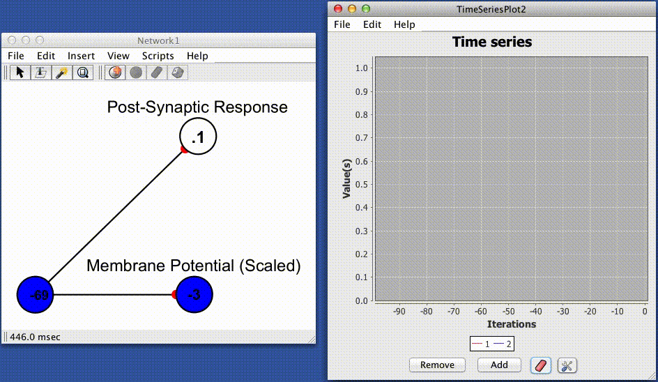

Convolved Jump and Decay

The convolved jump and decay spike responder produces a post-synaptic response (PSR) by convolving instantaneous trains of spikes (Dirac delta functions) with a simple exponential kernel. This yeilds the following equation for determining a post synaptic response based on the absolute efficacy of the synapse (strength/weight), the time since the last spike, and the current state (spiking or quiescent) of the pre-synaptic cell.
$$ q_{ij}(t + 1) \,\,=\,\, q_{ij}(t)e^{-\left( \frac{\Delta_{t}}{\tau} \right)} \,+\,\, Jw_{ij}\delta(t)_j$$
$$ PSR(t)_{ij} = q(t)_{ij} + b $$
$$ \delta(t)_j \,\, = \,\, \left\{\begin{matrix} 1 & \quad if \,\, j \,\, spikes \,\, at \,\, time \,\, t\\ 0 & \quad otherwise \end{matrix}\right. $$
Where $q(t)_{ij}$ is an intermediate value determining the shape of the post synaptic response impinging on neuron $i$ via the synapse connecting neuron $j$ to neuron $i$, $\Delta_t$ is the difference between the current time and the time of the last action potential at neuron $j$, $J$ is the jump height, $w_{ij}$ is the absolute synaptic efficacy of the synapse connecting neuron $j$ to neuron $i$, and $b$ is the baseline of the curve, which determines the value of $PSR(t)_{ij}$ as $q(t)_{ij} \rightarrow 0$.
Jump Height
This value is multiplied by the strength to determine the total instantaneous rise in a post-synaptic response to an action potential or spike.
Base-Line
The post-synaptic response value when no spike have occurred. Alternatively, the post synaptic response to whichdecays to over time.
Time Constant
The time constant of decay and recovery (ms).